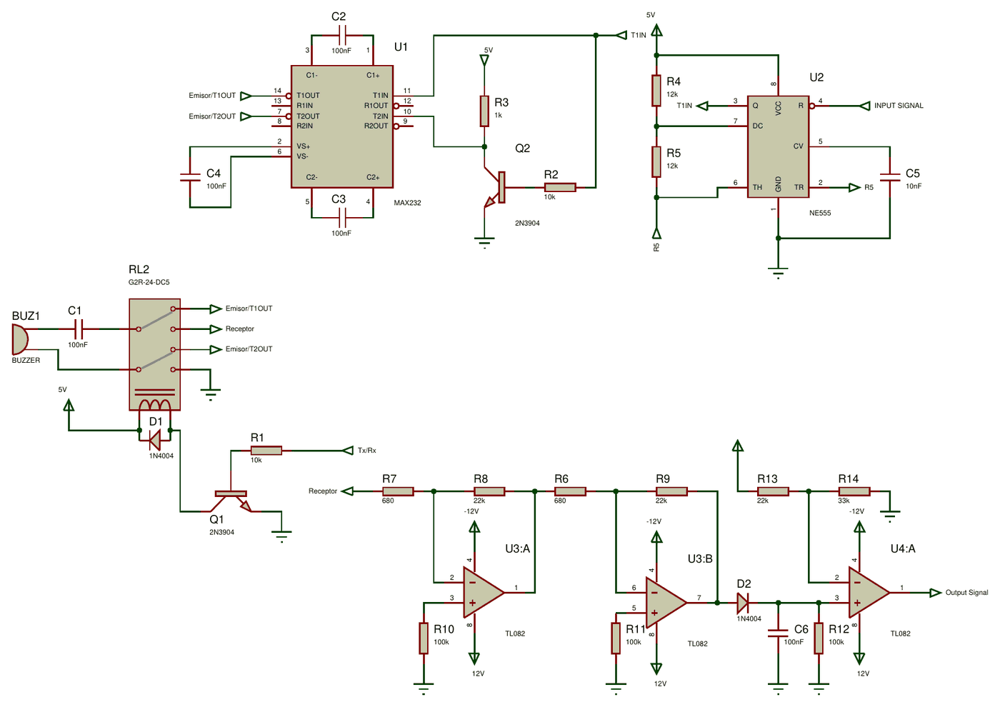
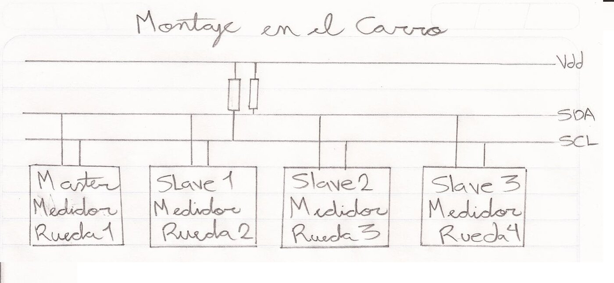
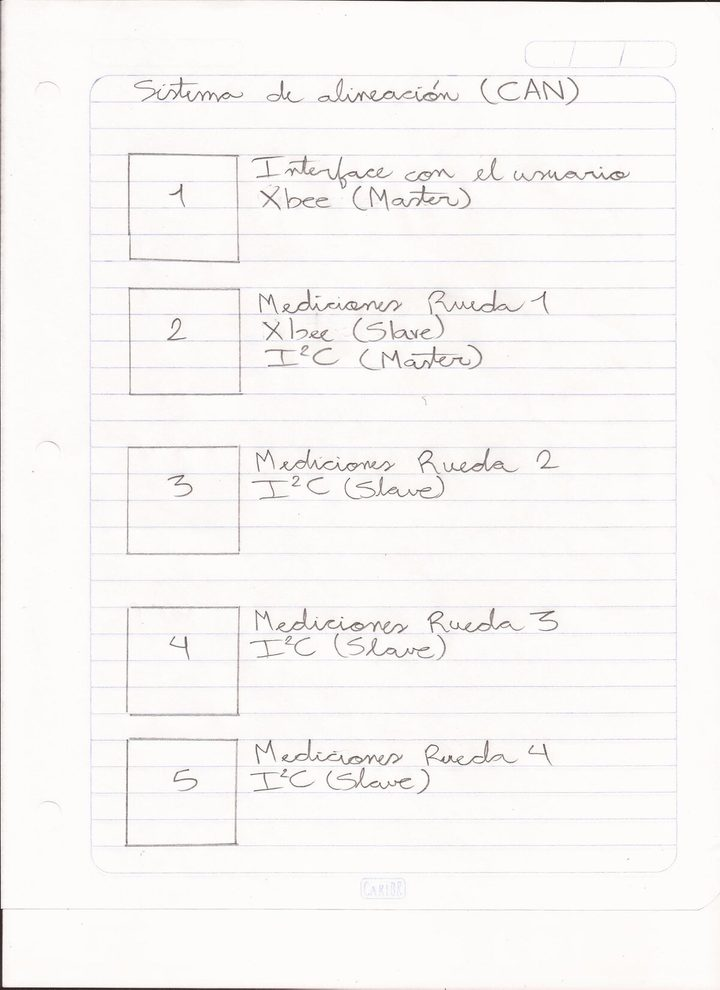
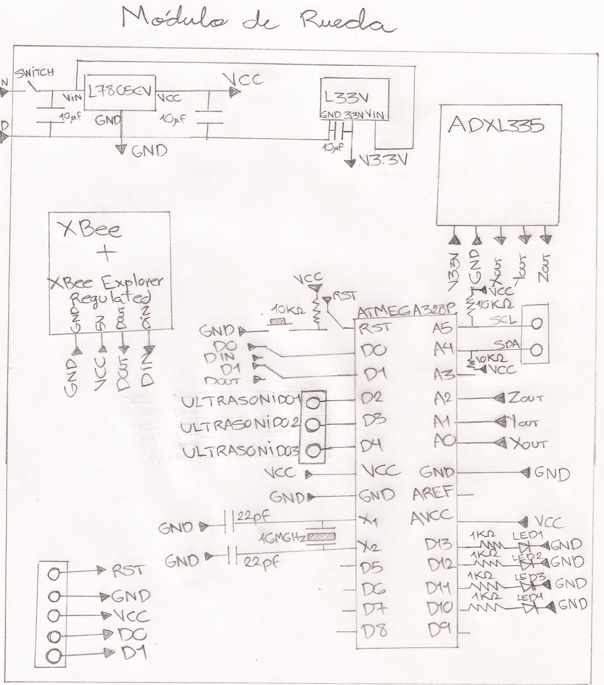
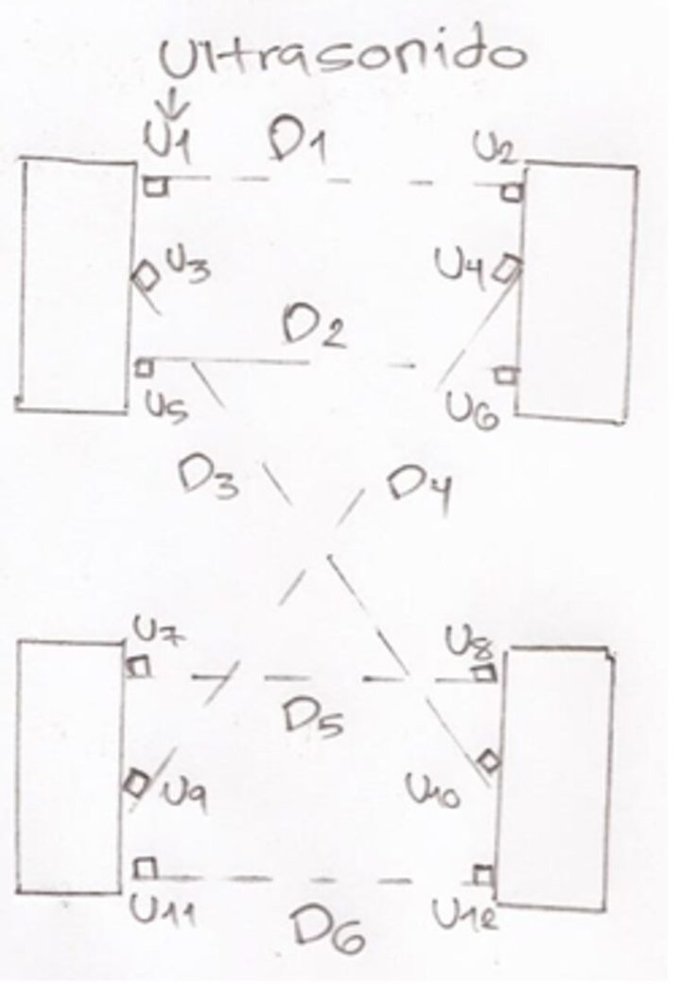
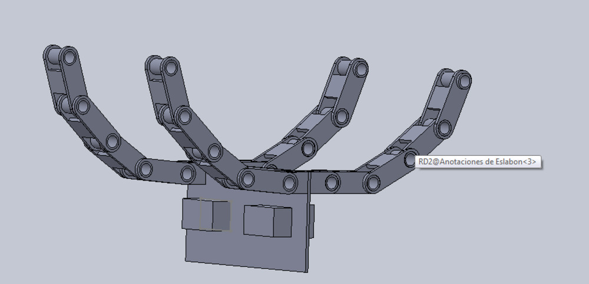

Electronic Wheel Alignment
An electronic wheel‑alignment system for the Baja SAE USB off‑road vehicle prototypes (Universidad Simón Bolívar). It reads each wheel's camber with an accelerometer and the toe with ultrasonic sensors, then shows the mechanic what to adjust on a small handheld display. It is one of the sub‑systems of the wider Baja SAE USB electronics work — Divisiones de Electrónica y de Suspensión, August 2013.
Step 1Define
Why
We aligned our cars by hand: parallel lines chalked on the floor (or cones joined with string), then a tape measure to set each wheel parallel to them. There was no way to read the actual camber angle, or to check that the four wheels were symmetric. Commercial electronic aligners — infrared heads bolted to a bench, a PC doing the maths — are far too big and expensive for a student team.
The car on the alignment jig.
What It Had to Do
The August 2013 report names two problems — the car was not symmetric, and there was no way to measure each tyre's inclination or how it relates to the others — and sets an objective against each; its system description adds what the display had to do:
- SymmetryMake the car symmetric: the paired distances between the four wheels must match
- CamberMeasure each tyre's inclination angle and compare it with the other three
- GuidanceShow the angles and a simple wheel diagram of which way to adjust, not just numbers
The brief: cost under 3000 Bsf, everything inside 50×50×50 cm, a simple interface, and a written guide.
How It Would Be Used
Our function‑tree notes lay out the procedure the system had to support, from start to finish:
- Seat the driver in the car and level the car.
- Fit a measuring unit to each wheel and wire the units together.
- Power up and switch on.
- Fire the ultrasonic sensors and check the measurements.
- Enter the target setup.
- Read the instructions on the display and adjust the suspension; repeat until the target setup is reached.
- Switch off and take the units off the car.
Step 2Simulate
The Ultrasonic Transceiver
I prototyped the ultrasonic circuits in Multisim: a receiver and two versions of an alternate system. The driver schematic (November 2013) uses one transducer for both jobs, switched by a relay (driven by a 2N3904 from a Tx/Rx line) between the driver and the receiver:
- Transmit — an NE555, enabled by an input signal, feeds a MAX232 directly on one channel and through a 2N3904 inverter on the other, so its two outputs drive the transducer from both ends.
- Receive — the echo goes through two TL082 inverting stages (680 Ω in, 22 kΩ feedback), a 1N4004 + 100 nF peak detector, and a TL082 comparator that turns it into a digital output signal.

The ultrasonic transceiver schematic — 555 + MAX232 driver at the top, the relay that swaps the transducer between transmit and receive at left, the receiver chain along the bottom.
Step 3Build
System Architecture
Five modules:
| Module | Radio | Bus | Role |
|---|---|---|---|
| User interface | XBee (master) | — | 16×2 LCD, push‑buttons, µC. Shows the angles and a simple wheel diagram of which way to adjust. |
| Wheel 1 | XBee (slave) | I²C (master) | accelerometer + ultrasonic sensors + µC; bridges the wheel bus to the UI over XBee |
| Wheels 2–4 | — | I²C (slave) | accelerometer + ultrasonic sensors + µC |
On the car the four wheel modules share a single 3‑wire bus — Vdd, SDA, SCL (I²C, with pull‑ups) — with Wheel 1 as the I²C master. Wheel 1 also carries the XBee that talks wirelessly to the handheld UI module. (A CAN‑bus version was sketched first; the built system uses XBee + I²C.) Every module has its own 5 V and 3.3 V regulators and an ICSP header.


The on‑car I²C bus, and the module list.
The µC in every module is an ATmega328P. In the handheld unit it runs the four push‑buttons, the 16×2 LCD and the XBee; in each wheel module it handles the three ultrasonic sensors, the status LEDs and the I²C link to the other three wheels, with the ADXL335 on three of its analog inputs.

The wheel‑module schematic — regulators, XBee, ADXL335, three ultrasonic connectors and the I²C pins around the ATmega328P.
Camber — the Accelerometer
An ADXL335 (±3 g, 3‑axis) is mounted parallel to the wheel. With the car stationary the only acceleration is gravity, so the sensor's X/Y/Z outputs give the wheel plane's tilt away from vertical. At a 3.3 V supply it sits at 0 g = 1.65 V with a 330 mV/g scale; read through a 10‑bit ADC:
a [m/s²] = ( reading_mV − 1650 ) / 330 × 9.80665Toe — the Ultrasonic Sensors
40 kHz ultrasonic emitter/detector pairs on the inner face of each tyre (the wave can't pass through the wheel). Time‑of‑flight × the speed of sound gives the distance to a reference point on another wheel; for a symmetric car the paired distances must match — D1 = D2, D3 = D4, D5 = D6. Ultrasonic was chosen over laser: cheaper, smaller, and no separate receiver structure to mount.

The measured distances between the wheels.
Mechanical Coupling
SolidWorks parts and assemblies attach the electronics to the car: a spring‑loaded clamp (pinza) that grips each tyre, an articulated link‑chain arm that references a longitudinal axis of the car, plus the tube‑axle parts and base plates.

The link‑chain coupling arm (SolidWorks).
Step 4Test
Tests
The ADXL335 was bench‑tested in the datasheet's three reference orientations. The raw sensor showed a clear zero offset and scale error — on one axis it read about 1.3 g where 1 g was expected — so a per‑axis calibration is needed before the angle can be trusted.
For the test the sensor was wired to an Arduino: X, Y and Z into analog inputs A0–A2, power from the Arduino's 3.3 V output. Each orientation puts gravity on a different axis, and the 10‑bit readings go through the conversion above. The report's results, ideal against measured:
| Gravity on | X (g) | Y (g) | Z (g) |
|---|---|---|---|
| Z | 0 → 0.27 | 0 → 0.04 | 1 → 1.31 |
| Y | 0 → 0.29 | 1 → 1.18 | 0 → 0.27 |
| X | 1 → 1.29 | 0 → 0.12 | 0 → 0.36 |
Step 5Refine
Next Steps
Our report's conclusions name two changes: the accelerometer tests gave the expected results, but the readings should be adjusted to come out more exact — the per‑axis calibration the table above calls for — and the ultrasonic sensors will have to be coordinated so they don't interfere with one another.
Posted In:
Vehicles